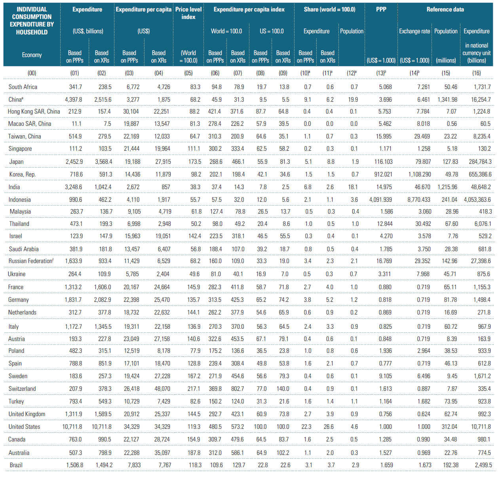

返回主页
TABLE 6.3 ICP 2011 Results: Individual Consumption Expenditure by Households

韩国人怎么看甲午战争
TABLE 6.1 ICP 2011 Results: GDP
TABLE 6.2 ICP 2011 Results: Actual Individual Consumption
TABLE 6.4 ICP 2011 Results: Individual Consumption Expenditure by Government
TABLE 6.5 ICP 2011 Results: Collective Consumption Expenditure by Government
TABLE 7.1 Twelve Largest Economies by Share of World GDP, ICP 2011
TABLE 7.2 Percentage of GDP to U.S. GDP (PPP-based) for 12 Largest Economies, ICP 2011 and ICP 2005
FIGURE 7.2 GDP Regional Shares (World = 100), ICP 2011
FIGURE 7.4 PLI versus GDP Per Capita (and Size of GDP), 2011 ICP
a.
All shares are rounded to one decimal place. More precision can be found in the Excel version of the table, which can be downloaded from the ICP website.
b.
All exchange rates (XRs) and PPPs are rounded to three decimal places. More precision can be found in the Excel version of the table, which can be downloaded from the ICP website.
c.
Egypt participated in both the Africa and Western Asia regions. The results for Egypt from each region were averaged by taking the geometric mean of the PPPs, allowing Egypt to be shown in each region with the same ranking in the world comparison.
d.
Sudan participated in both the Africa and Western Asia regions. The results for Sudan from each region were averaged by taking the geometric mean of the PPPs, allowing Sudan to be shown in each region with the same ranking in the world comparison.
e.
The results presented in the tables are based on data supplied by all the participating economies and compiled in accordance with ICP principles and the procedures recommended by the 2011 ICP Technical Advisory Group. The results for China are estimated by the 2011 ICP Asia and the Pacific Regional Office and the Global Office. The National Bureau of Statistics of China does not recognize these results as official statistics.
f.
The Russia Federation participated in both the CIS and Eurostat-OECD comparisons. The PPPs for Russia are based on the Eurostat-OECD comparison. They were the basis for linking the CIS comparison to the ICP.
g.
The official GDP of Cuba for the reference year 2011 is 68,990.15 million in national currency. However, this number and its breakdown into main aggregates are not shown in the tables because of methodological comparability issues. Therefore, Cuba’s results are provided only for the PPP and price level index. In addition, Cuba’s figures are not included in the Latin America and world totals.
h.
Bonaire’s results are provided only for the individual consumption expenditure by households. Therefore, to ensure consistency across the tables Bonaire is not included in the Caribbean or the world total.
i.
This table does not include the Pacific Islands and does not double count the dual participation economies: Egypt, Sudan, and the Russian Federation.
version:1.0; jobnet@188.com © retter2012.com